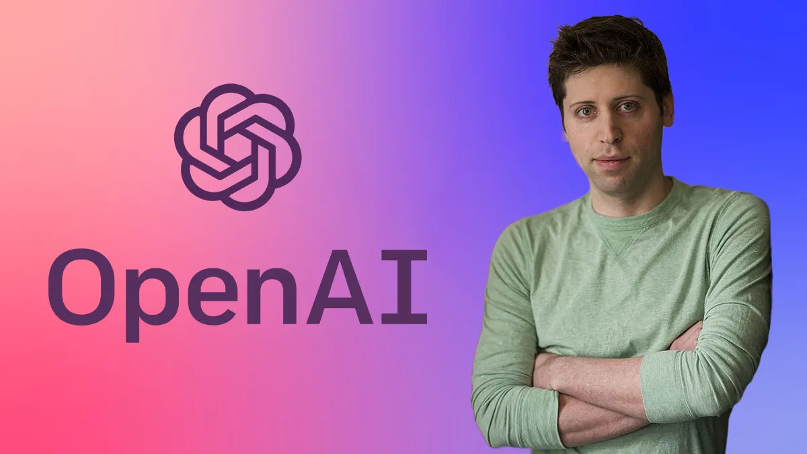
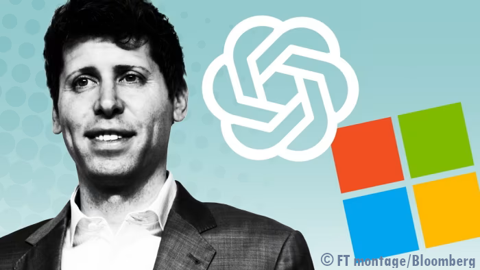
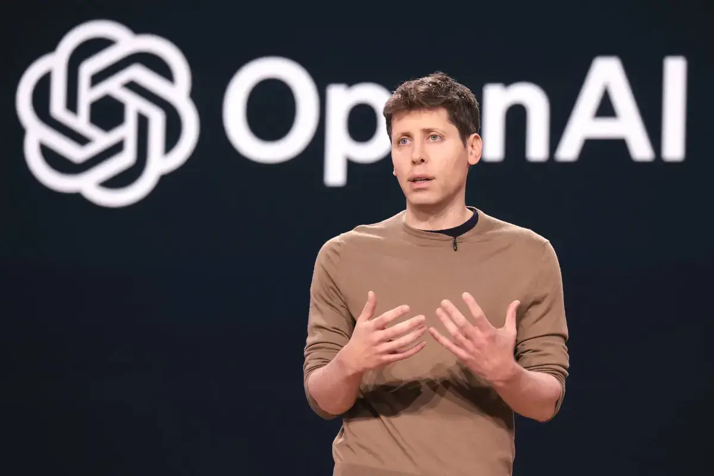
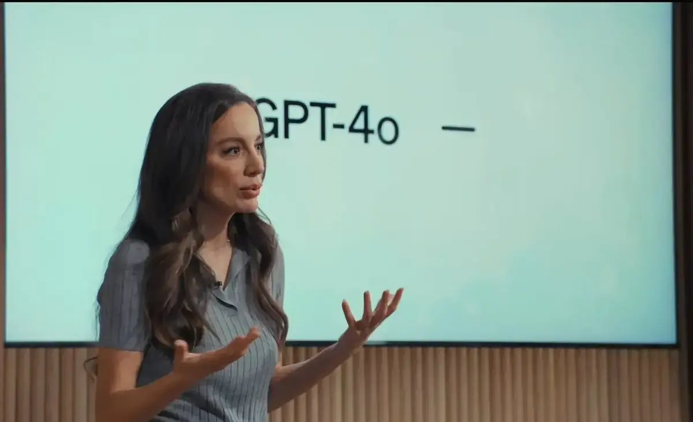

Les prévisions de Sam Altman
Source
- Julien DONMEZ - 05 octobre 2024
- Toutes les innovations »Tech
- Innovant.fr
Cette IA va réparer le climat : Sam Altman annonce une superintelligence capable de transformer l’avenir et coloniser l’espace.
La vision audacieuse de Sam Altman, PDG d'OpenAI, sur l'avenir de l'intelligence artificielle suscite autant d'espoir que de scepticisme.
Sam Altman et la superintelligence : fin de l'humanité ou début d'une ère prodigieuse ? Alors que certains voient une ère de prospérité sans précédent, d’autres craignent les conséquences imprévisibles de cette avancée technologique. Sam Altman a récemment partagé ses perspectives sur l’intelligence artificielle générale (AGI), une technologie qui pourrait révolutionner notre monde. Toutefois, les implications de cette transformation restent incertaines, suscitant des questionnements parmi les experts et le grand public .
Une superintelligence dans quelques milliers de jours
Sam Altman prévoit que nous pourrions atteindre la superintelligence dans « quelques milliers de jours ». Cette prédiction a provoqué des réactions variées, allant de l’enthousiasme à la méfiance. Pour Altman, l’AGI pourrait permettre de résoudre des problèmes mondiaux complexes, tels que la réparation du climat. Malgré les promesses, certains experts estiment que cette vision est prématurée et irréaliste. Le développement de l’AGI pose des défis techniques considérables, et son impact sur la société reste difficile à prévoir. Pourtant, l’idée d’une superintelligence continue d’alimenter les débats.
Potentiel et risques de l’AGI
L’AGI, selon ses partisans, pourrait métamorphoser de nombreux secteurs, de l’éducation à la santé. Une intelligence artificielle capable de surpasser l’intellect humain pourrait offrir des solutions inédites à des problèmes persistants. L’impact de l’AGI sur le progrès humain est indéniable. Cependant, les risques associés à une telle technologie sont également immenses. Les craintes d’une concentration de pouvoir entre les mains de quelques entreprises technologiques sont réelles. L’AGI pourrait devenir une ressource limitée, réservée aux plus riches. La connectivité verte : comment réduire l’empreinte carbone et les coûts énergétiques du numérique Promesses de prospérité ou menaces pour l’avenir ? Sam Altman envisage un avenir où l’AGI permettrait une prospérité globale, rendant la vie meilleure pour tous. Cette vision optimiste suppose une gestion judicieuse des ressources et une distribution équitable des avantages de l’IA.
🔍 Résumé Détails
🤖 Superintelligence Atteinte possible en quelques milliers de jours selon Altman
🌍 Problèmes mondiaux AGI pour résoudre des défis comme le climat
⚠️ Risques Concentration de pouvoir et inégalités
💡 Opportunités Amélioration de secteurs clés comme la santé
La perspective de l’AGI incite à se poser plusieurs questions cruciales :
Pourtant, la question de savoir si l’humanité est prête à gérer une telle puissance reste ouverte. Les défis éthiques et sociétaux associés à l’AGI nécessitent une réflexion approfondie et une réglementation adéquate pour éviter des dérives potentiellement catastrophiques.Comment garantir une distribution équitable des bénéfices de l’AGI ? Quels mécanismes de régulation sont nécessaires pour éviter les abus ? Comment préparer la société aux changements induits par l’AGI ? Alors que nous nous approchons de cette potentielle révolution technologique, il est essentiel de réfléchir aux implications profondes de l’AGI. Comment cette avancée pourrait-elle remodeler notre société et notre compréhension de l’intelligence humaine ?
- Jade Emy - 24 septembre 2024
- Intelligence artificielle
- Lire l'article sur Developpez.com
Sam Altman, PDG d'OpenAI, prévoit une superintelligence dans "quelques milliers de jours", qui permettra de réparer le climat, d'établir une colonie spatiale et de découvrir toute la physique
Source

- 30 septembre 2024
- Brève numérique
- Le Grand Continent.eu
Source
Le plan secret de Sam Altman : 7 000 milliards de dollars pour faire de l’IA la nouvelle électricité
OpenAI a un problème de rentabilité. Pour financer la nouvelle « ère de l’intelligence », Sam Altman serait en train de proposer à plusieurs acteurs économiques internationaux un plan dont les contours restent secrets, mais dont on sait qu’il nécessiterait un investissement initial de plusieurs milliers de milliards de dollars.
Critiqué par les dirigeants de TSMC qui l’ont qualifié de « podcasting bro
», le nouveau projet du PDG d’OpenAI semble inquiéter les États-Unis. En
prévoyant la construction de plusieurs dizaines de nouveaux data centers
grâce à des financements massifs des pays du Golfe,
le créateur de ChatGPT menace-t-il la sécurité nationale américaine ?
Selon plusieurs sources consultées par le New York Times1, le PDG d’OpenAI,
Sam Altman, a proposé à plusieurs investisseurs internationaux un nouveau
plan pour développer une infrastructure mondiale d’intelligence
artificielle (IA) nécessitant un investissement initial de plusieurs
milliers de milliards de dollars.
Sa thèse est simple. L’IA devrait circuler et être disponible comme
l’électricité : tout comme le courant a transformé le monde, Altman
espère que les centres de données permettront de diffuser l’IA comme un
service omniprésent.
Lors de conversations privées révélées par le New York Times, Sam Altman
aurait déclaré : « à mesure que la disponibilité de l’électricité s’est
répandue, on a trouvé de meilleures façons de l’utiliser ».
Son projet inclurait la construction de nouvelles usines de puces et de centres de données à travers le monde, notamment au Moyen-Orient, en Asie et aux États-Unis.
Altman semble avoir initialement envisagé que les Émirats arabes unis financent des usines de puces, chacune coûtant jusqu’à 43 milliards de dollars, qui pourraient être utilisées par Nvidia et d’autres acteurs pour alimenter les centres de données IA.
Aux États-Unis, Altman a plaidé en faveur de centres de données d’une valeur de 100 milliards de dollars chacun, capables de contenir deux millions de puces IA. Leur consommation d’électricité s’élèverait à 5 gigawatts, soit 20 fois plus qu’un centre de données classique.
En Allemagne, OpenAI explorerait la construction d’un centre de données
dans la mer du Nord pour exploiter 7 gigawatts d’énergie éolienne.
Selon plusieurs sources, lorsque Sam Altman a visité le siège de TSMC à
Taïwan peu après avoir commencé sa collecte de fonds
, il aurait indiqué à ses dirigeants qu’il lui faudrait 7 000 milliards
de dollars et de nombreuses années pour construire 36 usines de
semi-conducteurs et des centres de données supplémentaires.
Cette idée a été jugée irréaliste par les dirigeants de TSMC, l’un des
plus grands fabricants mondiaux de semi-conducteurs. L’une des
personnes présente lors des échanges l’aurait qualifié de « podcasting
bro ».
La participation potentielle des Émirats arabes unis et d’autres acteurs internationaux à la construction de ces infrastructures critiques aurait soulevé des préoccupations en matière de sécurité nationale aux États-Unis, notamment quant au risque d’une influence accrue de la Chine.
En réponse à ces critiques, Altman aurait revu son ambition à la
baisse, visant un financement de quelques centaines de milliards de
dollars, en priorisant la construction de centres de données aux
États-Unis. Toutefois, le créateur de ChatGPT aurait mis en garde : si
les États-Unis refusent de collaborer avec les Émirats, la Chine
pourrait saisir l’opportunité.
Le 23 septembre, une réunion à la Maison-Blanche entre le président Biden
et le président des Émirats, Mohamed bin Zayed, a abouti à un engagement
pour renforcer la coopération dans le domaine de l’IA2.
La recherche d’un modèle économique devient pressante pour Sam Altman :
OpenAI a en effet un problème de rentabilité.
S’il réalise plus de 3 milliards de dollars de ventes annuelles, ses coûts
s’élèvent à environ 7 milliards de dollars par an.
Les visites se sont effondrées au cours des derniers mois depuis
l’introduction du modèle amélioré de ChatGPT, GPT-4, au premier trimestre
2023 : elles ont été divisées par 7 entre avril et juin 2024, passant de
1,8 milliard par mois à 260 millions.
OpenAI cherche à lever 6,5 milliards de dollars pour soutenir son activité
qui serait valorisée à 150 milliards de dollars. Parmi les investisseurs
potentiels : Microsoft, Nvidia, Apple et MGX (Émirats arabes unis).
Pour le moment, l’objectif — dont les détails sur le financement et les
constructions ciblées sont encore flous — est de créer une fédération lâche
d’entreprises, y compris des constructeurs de centres de données (comme
Microsoft), des investisseurs et des fabricants de puces, afin de soutenir
l’essor de l’IA.
Comme le montrait Quinn Slobodian dans nos pages, les pays du Golfe sont l’un des rares réservoirs de capitaux dans lesquels il est possible de puiser à une époque où les taux d’intérêt de plus en plus élevés ont tari les autres sources de financement : « les Saoudiens ont tout simplement l’avantage d’avoir de l’argent liquide ». Les Émirats ont d’ailleurs placé l’IA au centre de leur stratégie de diversification économique, dans un contexte où l’urgence climatique et les engagements pris par les États en faveur de la réduction des émissions de gaz à effet de serre créent de l’incertitude quant à l’avenir des exportations d’hydrocarbures.
Sources : Cade Metz, Tripp Mickle, « Behind OpenAI’s Audacious Plan to Make A.I. Flow Like Electricity », The New York Times, 25 septembre 2024. Remarks by President Biden and President Mohamed bin Zayed al Nahyan of the United Arab Emirates Before Bilateral

- Vincent Lautier - 25 octobre 2024
- Mac4Ever - Divers
- Mac4ever.com
Source
OpenAI veut lancer un modèle 100 fois supérieur à GPT-4 d'ici décembre
OpenAI prévoit de lancer Orion, son modèle d'intelligence artificielle avancé, d'ici décembre. Avec un potentiel de puissance jusqu'à 100 fois supérieur à GPT-4 (rien que ça), Orion représente une étape vers l'atteinte de l'intelligence artificielle générale
Un lancement progressif avec un accès limité
Le prochain modèled'OpenAI, baptisé Orion, pourrait révolutionner une fois de plus le domaine de l'intelligence artificielle en dépassant les capacités des modèles précédents. Contrairement aux lancements de GPT-4 et de GPT-4.5, disponibles dès leur sortie viaChatGPT, Orion sera d’abord accessible à des partenaires privilégiés d'OpenAI.Microsoft, partenaire stratégique, devrait intégrer ce modèle sur sa plateforme cloud Azure dès novembre, offrant aux entreprises l'opportunité de développer des produits et des services basés sur cette technologie avancée. Cette distribution progressive pourrait permettre d’optimiser les performances d’Orion avant une diffusion plus large.
Une puissance inégalée pour un pas vers l’AGI
OpenAIambitionne de faire d'Orion une avancée majeure en matière de modélisation de langage, avec une capacité de traitement jusqu'à 100 fois supérieure à celle de GPT-4.Cette puissance vise non seulement à améliorer la génération de texte, mais aussi à s'approcher de l'intelligence artificielle générale(AGI). Pour rappel, l’AGI se définit comme une IA capable de comprendre et de résoudre des problèmes complexes au même titre qu'un humain. La stratégie d’OpenAI consiste à fusionner ses différents modèles de langage pour, à terme, atteindre cette intelligence unifiée.
Financement et restructuration
La sortie d'Orion accompagne une transformation structurelle d’OpenAI, qui vient de lever 6,6 milliards de dollars, valorisant l'entreprise à environ 157 milliards de dollars.Cette levée de fonds, principalement menée par Thrive Capital et renforcée par des contributions de Microsoft, Nvidia et SoftBank, soutiendra la recherche avancée et l’augmentation de la capacité informatique de l'entreprise. Dans le cadre de cette nouvelle phase de croissance, OpenAI a également annoncé une transition vers une structure à but lucratif pour mieux capter des fonds et répondre à la concurrence croissante d’acteurs comme Anthropic AI.

Départs de dirigeants et réorganisation interne
Ce financement massif arrive alors qu’OpenAI connaît une vague de départs au sein de sa direction, y compris celui, très médiatisé, de la directrice technique Mira Murati, qui a contribué aux progrès d’OpenAI dans la modélisation de langage et la recherche IA. D’autres cadres, tels que le directeur de la recherche Bob McGrew et le vice-président de l’optimisation Barrett Zoph, ont également quitté l’entreprise pour poursuivre d’autres projets. Cette restructuration, bien que sous pression, semble alignée avec les objectifs à long terme d'OpenAI : continuer de développer une intelligence artificielle de pointe et renforcer son statut de leader technologique.
Le lancement d'Orion est donc une étape cruciale pour OpenAI, mais c’est aussi une percée technologique qui pourrait inquiéter les nombreux détracteurs de l’intelligence artificielle en général. Quel regard portez-vous sur les pas de géants faits quotidiennement par toutes ces technologies ?